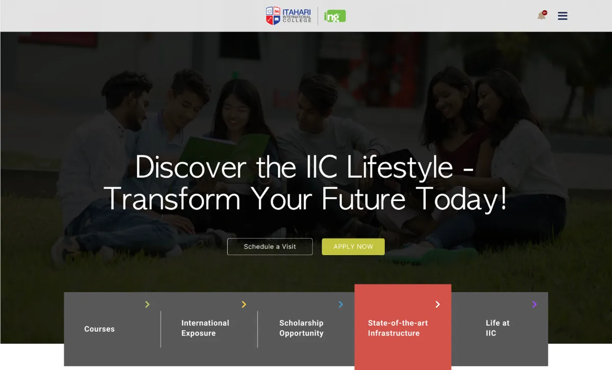
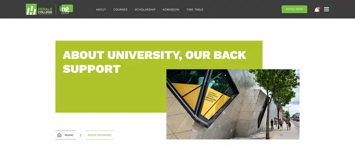
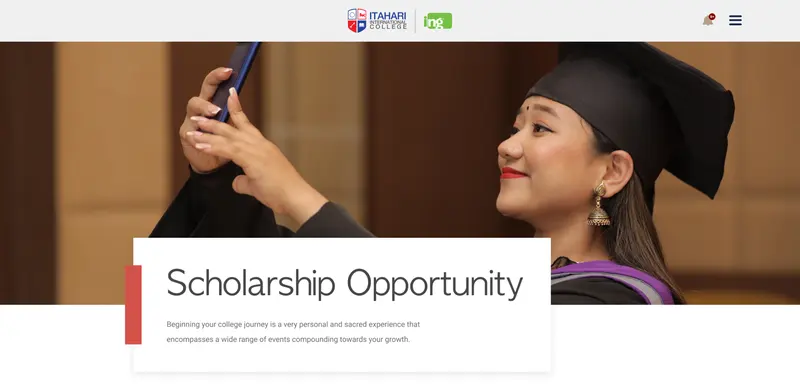
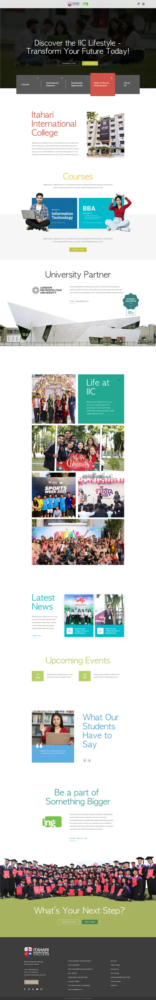

Herald's younger sibling, with a softer voice and a card on every photo.

IIC and Herald College both belong to ING Group, and the two sites share a footer, a link list and a lot of page types. IIC changes the voice: thin display type instead of heavy capitals, and a white card laid on a full-bleed photo instead of a lime block.


| Herald | IIC | |
|---|---|---|
| Headings | Heavy capitals, a new colour per home section | Light display face, mostly red and blue |
| Inner header | Lime block, offset photo, breadcrumb | Photo, white card, red bar, no breadcrumb |
| Page ending | Two versions | One, every time: graduates and "What's Your Next Step?" on olive |
| Nav | Five links in the header | Logo centred, links behind a menu |
With the links tucked into a menu, the home hero carries the navigation itself: five dark tabs along its bottom edge, with the active one lifted in red. Each tab names a page. Try the strip; the two greyed tabs don't have pages in this set.
The tab-to-page match is mine
The infrastructure page labels each space with a bold coloured tile laid over its photo. It's the liveliest layout on the site. Pick a room to read its tile.
Enjoy your lunch/snack time with your buddies along with a side of freshly brewed coffee in our open cafeteria.
The news page filters by News, Events and Blogs, and each card carries a coloured tag, a date and a time. The artwork changes card to card. The headline doesn't. Try the filters.
The scholarship page shows the two schemes, two past winners with their photos, and a list of AAA 2022 recipients. The list has 21 rows in three columns. Each column repeats the same seven names, so I've left the names out and shown the pattern instead.
The card-on-photo header and the coloured room tiles give IIC its own look inside a shared family. Most of what's left is copy that came across from the sister sites.